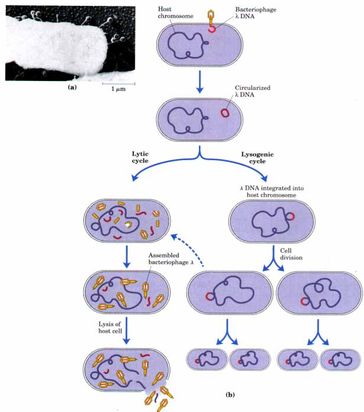
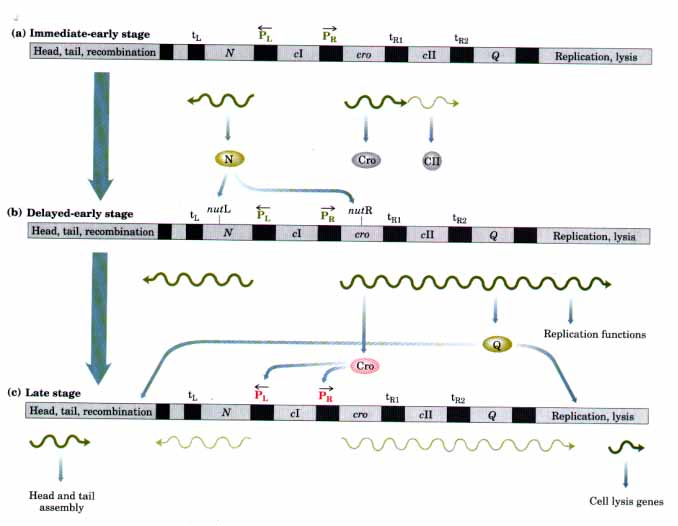
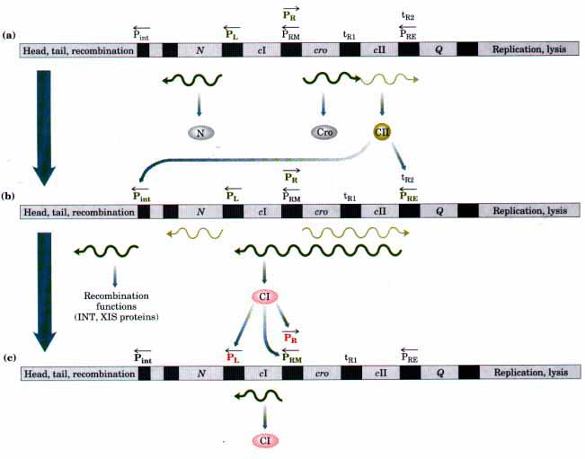

The objective of regulation of bacterial virus (bacteriophage)
genes is usually the orderly assembly of new phage particles
without destroying the host cell too soon. The well-studied
bacteriophage λ provides an example of a complex and elegant
regulatory circuit that determines the developmental fate of the
virus in a given bacterial cell. This provides a paradigm for the
complex problem of development in multicellular organisms.
Lysis or Lysogeny: Tivo Possible Fates
Bacteriophage λ (Fig. 27-25) is a medium-sized DNA phage with a
chromosome containing 48,502 base pairs. It is a temperate
phage, meaning that phage infection does not always result in
the destruction of the host cell. The DNA of the invading phage
has two possible fates (Fig. 27-25b): reproduction leading to
generation of new phage particles and lysis of the cell (Iyticcycle)
or a relatively benign integration into the host chromosome where
it can be replicated passively with the host DNA for many
generations (lysogeny). The choice between lysis and
lysogeny is governed largely by the interactions of five
regulatory proteins called CI, CII, Cro, N, and Q. These proteins
regulate transcription from a number of promoters in a regulatory
region of the phage DNA described below. The functions of the
proteins and promoters are summarized in Table 27-l.

Figure 27-25 Bacteriophage λ (a) Electron micrograph of bacteriophage λ virus particles attached to an E. coli cell. (b) Two alternative fates for a bacteriophage A infection: lysis or lysogeny. Under certain conditions (e.g., when the SOS response is induced), the lysogenic state is interrupted and the cell undergoes a lytic cycle (dashed arrow).
| Table 27-1 Regulatory elements of bacteriophage λ | |
| Regulatory element | Function |
| Proteins | |
| CI | At low concentrations a repressor of PR and PL and an activator of PRM; at high concentrations also represses PRM |
| CII | An activator of PRE and Pint |
| Cro | At low concentrations a repressor of PRM; at high concentrations also represses PL and PR |
| N | An antiterminator at tL1, tR1, tR2, and other terminators |
| Q | An antiterminator for late gene transcription |
| Promoters | |
| PR | Major rightward transcription |
| Pl | Major leftward transcription |
| PRM | Transcription for repressor maintenance |
| PRE | Transcription for repressor establishment |
| Pint | Transcription of genes for integration and excision |
The CI, CII, and Cro proteins are approximately analogous to the types of regulatory proteins already described. The CI and Cro proteins are repressors, and the CII protein is an activator. The N and Q proteins interact directly with the E. coli RNA polymerase to permit readthrough (i.e., transcription) of certain transcription termination sequences built into the phage DNA genome. This activity of the N and Q proteins is referred to as antitermination, and it is distinct from the regulatory mechanisms described to this point.
Lysis In the lytic pathway (Fig. 27-26), phage genes are arranged in three sets according to their time of expression. Some products of genes expressed in the first stage (immediate-early) are required to permit transcription of second-stage genes (delayed-early). The products of some second-stage genes, in turn, are required to permit transcription in the last stage (late genes). In general, genes required for replication and recombination are expressed early, and genes required for assembling phage peptides and lysing the host cell are expressed late. The N and Q proteins are the key to temporal regulation of the expression of bacteriophage genes.

Figure 27-26 Regulation of gene expression in the lytic pathway of bacteriophage λ. An abbreviated map of bacteriophage λ is shown; key genes and regulatory sites involved in the lytic pathway are highlighted. Note that this map is not drawn to scale; the regulatory region is disproportionately large. Temporal regulation of gene expression is accomplished in a cascade, in which one gene product produced at each stage is required to stimulate gene expression in the next stage. The key gene products are the N protein, produced from an immediate-early gene (a), and the Q protein, produced from a delayed-early gene (b). The N protein stimulates (b) delayed-early and the Q protein stimulates (c) late gene expression. The promoters PL and PR are critical for immediate-early and delayed-early transcription. Other regulatory sites, including the transcription terminators (tRl, tR2, tL), are described in the text. (c) The stimulation of late gene expression by Q protein is complemented by repression of PR and PL transcripts by the Cro protein. The action of CII protein is described in Fig. 27-27. Components involved in activation, as well as new mRNAs synthesized at each stage, are shown in green; components involved in repression are in red.
When the phage DNA enters a host cell, the regulatory cascade begins. First, the E. coli RNA polymerase initiates transcription at two promoters, PR and PL. This immediate-early mRNA synthesis (Fig. 27-26a) is limited in both cases by transcription terminators; these are designated tRl and tR2 for transcripts originating at PR, and tL for transcripts originating at PL. The transcript from PR includes the cro gene, and about half of these transcripts proceed through tRl to include the cII gene as well (Cro and CII are considered below). The transcript from PL includes the N gene.
The N protein triggers the second phase in the cascade: expression of the delayed-early genes (Fig. 27-26b). Once sufficient N protein is synthesized, it interacts with RNA polymerase, modifying it in some manner so that it overrides the three termination signals, tL, tR1, and tR2. This leads to the production of longer transcripts that now include the Q gene and genes for proteins needed in viral replication.
The third and final phase is the expression of the late genes (Fig. 27-26c), which are transcribed from separate promoters only after the Q protein has been produced. This protein also interacts with RNA polymerase and antagonizes transcription termination at other sites (not shown in Fig. 27-26). The late genes include those for the structural proteins needed to assemble a virus particle. Once the new phages are assembled, the cell is lysed and the virus particles are freed.
The N and Q proteins have similar functions, but their mechanisms of action may differ. The N protein binds to specific DNA sequences (called nutL and nutR) located upstream of the transcription terminators (Fig. 27-26b). When RNA polymerase reaches this point it is modified (mechanism unknown) in a reaction requiring N and at least three host cell proteins. The RNA polymerase thereby acquires the ability to transcribe through many kinds of terminators. The Q protein interacts with RNA polymerase at a sequence near late promoters, where transcription pauses shortly after initiation. It modifies the RNA lymerase in a reaction requiring only Q and perhaps one other protein. The mechanism of N and Q action remains an important research area. Antitermination of RNA synthesis is also a regulatory mechanism in some eukaryotic systems.
Lysogeny Infection results in lysis only about half the time. Those cells that escape this fate are lysogenized. The lysogenic pathway is governed by another immediate-early gene product, the CII protein. The CII protein is an activator that stimulates transcription from two additional promoters, PRE and Pint (Fig. 27-27). The transcript from PRE includes the cI gene that encodes the CI protein, which is a repressor. If synthesized early enough, this repressor is capable of suppressing virtually all bacteriophage transcription except that originating at the PRM promoter. The transcript from Pint includes genes required for the integration of viral DNA into the host chromosome through sitespecific recombination (involving the INT and XIS proteins; see Fig. 24-37). Once integrated, expression of the bacteriophage genes is repressed by CI protein, and the bacteriophage genome is replicated passively with the host chromosome.

Figure 27-27 Regulation of gene expression in the lysogenic pathway of bacteriophage λ. (a) RNA transcripts initiated at PR continue through tRi about 50% of the time, resulting in synthesis of CII protein as an early gene product. (b) The CII protein activates transcription at PRE and Pint, resulting in production of the CI protein (a repressor) and proteins required for recombination. (c) The CI repressor is an antagonist of the Cro repressor (see Fig. 27-28), and it effectively shuts down bacteriophage gene expression except from PRM. Early production of CII and then CI in sufficient amounts tips the balance toward lysogeny rather than lysis. Continued cI expression maintains the λ genome in the dormant state. (Red and green are used as in Fig. 27-26.)
The lysogeny/lysis decision appears to be determined in part by the nutritional status of the host cell. The CII protein is subject to rapid degradation by E. coli proteases. The proteases are more abundant when the cell is growing rapidly in a rich medium, so that under these conditions the absence of CII (activator) limits CI (repressor) production and the scale tips in favor of lysis. When cells are starved, CII protein is elevated and the resulting production of CI protein favors the lysogenic path.
In the lysogenized state the phage is referred to as a prophage. To establish and maintain lysogeny, the CI protein binds to six operators, called OL(1-3) and OR(I-3) (Fig. 27-28; only the OR operators are shown). The sequences of the six operators are different, so that CI protein binds most tightly to ORl and OLl and least tightly to OR3.Binding to OLl blocks transcription from PL, and binding to OR1 and OR2 similarly blocks PR. This effectively blocks all bacteriophage transcription except from the cI gene itsel?The CI protein autoregulates its synthesis from yet another promoter, PRM (PRE produces the high concentration of CI protein needed to establish lysogeny; PRM produces the lower concentration of CI protein needed to maintain it). OR3 governs transcription from PRM. At low concentrations of CI protein, OR3 is unoccupied and CI protein is produced (CI protein bound to OR2 actually acts as an actiuator and stimulates RNA polymerase action at PRM). The production of CI protein ceases when the concentrations are sufficient to occupy OR3. The CI protein (Fig. 27-13) is also called simply the λ repressor.
The lysogenic state can continue for countless cell generations unless interrupted by an event such as treatment of the host cell by a DNA-damaging agent that induces the SOS response. The trigger that allows the prophage to emerge from the lysogenic state is a sudden reduction in the CI protein concentration as a result of self cleavage facilitated by the RecA protein, as described above for LexA repressor. Removal of CI protein allows some transcription at PR to produce Cro protein. The Cro protein is also a repressor, but it antagonizes the activity of CI protein (Fig. 27-28). The Cro protein binds to the same operators as CI protein, but with the reverse order of affinity. By binding tightly to OR3, the Cro protein blocks further CI protein synthesis and sets in motion a series of events that leads to excision of the viral DNA from the bacterial chromosome and a lytic cycle. The system allows phage λ to make a fast exit in times of stress to the bacterial host. The interplay of proteins and DNA binding sites exhibits an extraordinary degree of sophistication and sensitivity.